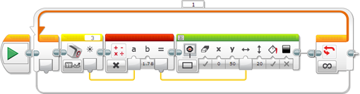

					<table cellpadding="0" cellspacing="0" border="0"><tbody><tr><td>
	
						<h1>使用颜色传感器<a name="top"></a></h1>
		<div id="block_802" class="block blockHeader">
				<div class="description">颜色传感器可以检测进入传感器正面小窗口的光线的颜色或强度。颜色传感器可以在三种不同模式下使用：<a href="./index.html?id=UsingSensors_Color#ColorMode">“颜色”模式</a>、<a href="./index.html?id=UsingSensors_Color#ReflectedLightIntensityMode">“反射光线强度”模式</a>和<a href="./index.html?id=UsingSensors_Color#AmbientLightIntensityMode">“环境光强度”模式</a>。</div>
			</div>
	<div id="block_803" class="block blockChaptor">
		<div class="title"><a name="ColorMode" style="position:relative; top:-10px;"></a>“颜色”模式</div>
		<div class="description">在“颜色”模式中，颜色传感器可以检测附近物体的颜色或传感器附近表面的颜色。例如，可以使用“颜色”模式检测接近传感器的 LEGO 部件的颜色，或是一张纸上不同标记的颜色。<br>
<br>
<br>
</div>
	</div>
	<div id="block_804" class="block blockTip">
		<div class="title">提示和技巧</div>
		<div class="boxContent">
			<div class="description">当颜色传感器处于“颜色”模式时，传感器正面的红色、绿色和蓝色 LED 指示灯会开启。</div>
				</div>
	</div>
	<div id="block_806" class="block blockStep">
		<div class="title"></div>
		<div class="description">传感器可以检测七种不同颜色：黑色、蓝色、绿色、黄色、红色、白色和棕色。不是这些颜色之一的物体可能会检测为“无颜色”，或可能检测为相似颜色。例如，橙色物体可能检测为红色或黄色（具体取决于橙色所含红色的程度），如果橙色非常深或是距离传感器太远，则可能检测为棕色或黑色。</div>
	</div>
	<div id="block_807" class="block blockTip">
		<div class="title">提示和技巧</div>
		<div class="boxContent">
			<div class="description">物体或表面应非常接近于传感器（但不接触它）以便准确检测。</div>
				</div>
	</div>
	<div id="block_809" class="block blockChaptor">
		<div class="title"><a name="ReflectedLightIntensityMode" style="position:relative; top:-10px;"></a>“反射光线强度”模式</div>
		<div class="description">在“反射光线强度”模式中，颜色传感器会检测进入传感器的光线的强度。光线的强度测量为从 0 至 100 的百分比，其中 0 表示非常暗，100 表示非常亮。 <br>
<br>
当颜色传感器处于“反射光线强度”模式时，传感器正面的红色 LED 指示灯会开启。如果传感器接近于物体或表面，则此红色光线会从物体上反射，然后进入要检测的传感器。可以使用此方法测量表面或物体上的颜色阴影，因为较暗颜色阴影会将较少红色光线反射回传感器。 <br>
<br>
例如，可以使用此模式使机器人跟随白色表面上的黑色线。当传感器越过黑色线时，光线测量会随着传感器越来越接近黑色线而逐渐减小。这可以用于告知机器人与线的接近程度。<br>
<br>
<br>
</div>
	</div>
	<div id="block_810" class="block blockTip">
		<div class="title">提示和技巧</div>
		<div class="boxContent">
			<div class="description"></div>
			<div id="block_812" class="block blockTable bullets">
		<table class="blockTable">
		
<tbody><tr><td></td><td>“反射光线强度”模式测量进入传感器的光线总量。这包括红色 LED 的反射以及房间中的任何光线。传感器位置应接近于（但不接触）所测量的表面，以减小外部光源的影响。 </td></tr>		</tbody></table>
	</div>
		</div>
	</div>
	<div id="block_813" class="block blockChaptor">
		<div class="title"><a name="AmbientLightIntensityMode" style="position:relative; top:-10px;"></a>“环境光强度”模式</div>
		<div class="description">在“环境光强度”模式中，与“反射光线强度”模式一样，颜色传感器会检测进入传感器的光线的强度。光线的强度测量为从 0 至 100 的百分比，其中 0 表示非常暗，100 表示非常亮。 <br>
<br>
在“环境光强度”模式中，传感器正面的蓝色 LED 指示灯会微弱开启。此蓝色指示灯可帮助识别传感器处于“环境光强度”模式，但是不影响光线测量，除非物体非常接近于传感器。<br>
<br>
可以使用此模式检测房间灯的亮度，或是其他光源照射到传感器的时间。还可以使用此模式检测房间中灯的开启时间或是手电筒照射到机器人的时间。<br>
<br>
<br>
</div>
	</div>
	<div id="block_814" class="block blockChaptor">
		<div class="title"><a name="ColorSensorData" style="position:relative; top:-10px;"></a>颜色传感器数据</div>
		<div class="description">颜色传感器可以提供以下数据：</div>
	</div>
	<div id="block_815" class="block blockTable ">
		<table class="blockTable">
		

			<tbody><tr>
<th>数据</th><th>类型</th><th>范围</th><th>备注</th>			</tr>
<tr><td>颜色 <a name="Color" style="position:relative; top:-10px;"></a></td><td>数字</td><td>0-7</td><td>在“颜色”模式中使用。<br>
0 = 无颜色<br>
1 = 黑色<br>
2 = 蓝色<br>
3 = 绿色<br>
4 = 黄色<br>
5 = 红色<br>
6 = 白色<br>
7 = 棕色</td></tr><tr><td>光线 <a name="Light" style="position:relative; top:-10px;"></a></td><td>数字</td><td>0-100</td><td>在“反射光线强度”和“环境光强度”模式中使用。以百分比形式测量光线强度，0 = 最暗，100 = 最亮。</td></tr>		</tbody></table>
	</div>
	<div id="block_817" class="block blockExample">
		<div class="title">示例 1：驱动至达到黑色线（方法 1）</div>
		<div class="image"></div>
		<div class="description">此程序使机器人驱动，直至颜色传感器检测到黑色，然后停止。此程序在“颜色传感器 － 比较 － 颜色”模式中使用<a href="./index.html?id=Wait">等待</a>模块测试黑色。</div>
	</div>
	<div id="block_818" class="block blockTip">
		<div class="title">提示和技巧</div>
		<div class="boxContent">
			<div class="description">如果在机器人上的颜色传感器向下指并接近于带有粗黑线的浅色表面的情况下使用此程序，则机器人可以驱动至达到该线。</div>
				</div>
	</div>
	<div id="block_820" class="block blockExample">
		<div class="title">示例 2：驱动至达到黑色线（方法 2）</div>
		<div class="image"></div>
		<div class="description">此程序使机器人驱动，直至颜色传感器检测到深色，然后停止。此程序在“颜色传感器 － 比较 － 反射光线强度”模式中使用<a href="./index.html?id=Wait">等待</a>模块等到光线强度小于 50%。</div>
	</div>
	<div id="block_821" class="block blockTip">
		<div class="title">提示和技巧</div>
		<div class="boxContent">
			<div class="description">与上面示例 1 中的方法相比，此程序允许您通过更改阈值（此处为 50%）来调整线的所需浓度。机器人还会在任何深色（而不仅是黑色）处停止。</div>
				</div>
	</div>
	<div id="block_823" class="block blockExample">
		<div class="title">示例 3：仅当房间灯开启时驱动</div>
		<div class="image"></div>
		<div class="description">此程序使机器人在房间灯开启时驱动，在关闭灯时停止。此程序将<a href="./index.html?id=CaseSelector">切换</a>与“颜色传感器 － 比较 － 环境光强度”模式一起使用以测试光线是否强于 20%。“切换”选择是开启还是关闭电机。“切换”在循环中重复执行，以便机器人持续响应光线变化。</div>
	</div>
	<div id="block_824" class="block blockExample">
		<div class="title">示例 4：检测到时说出“Red”、“Green”和“Blue”</div>
		<div class="image"></div>
		<div class="description">此程序使 EV3 在颜色传感器检测到这些颜色时说出“Red”、“Green”和“Blue”。此程序在“颜色传感器 － 测量 － 颜色”模式中使用<a href="./index.html?id=CaseSelector">切换</a>，根据检测到的颜色选择不同声音模块。会将“无颜色”情况作为默认情况添加并选择，这样 EV3 在未看到三种颜色的任一种时不会提示任何内容。</div>
	</div>
	<div id="block_825" class="block blockExample">
		<div class="title">示例 5：显示反射光线计</div>
		<div class="image"></div>
		<div class="description">此程序将图形光线计置于 EV3 显示屏上。此程序在“测量 － 反射光线强度”模式中使用<a href="./index.html?id=ColorSensor">颜色传感器</a>模块测量反射光线 (0-100) 并通过数据线获取结果。结果随后会乘以 1.78 以将其缩放为 EV3 屏幕宽度（178 像素），然后用作实心矩形形状的宽度。该过程在循环中重复执行，以便持续更新显示屏。</div>
	</div>
	<div id="block_826" class="block blockTip">
		<div class="title">提示和技巧</div>
		<div class="boxContent">
			<div class="description">在运行此程序时，尝试移动颜色传感器经过不同颜色和阴影的表面。将能够看到哪些颜色的反射更亮。</div>
				</div>
	</div>
	<div id="block_828" class="block blockChaptor">
		<div class="title"><a name="ColorSensorBlocksAndModes" style="position:relative; top:-10px;"></a>颜色传感器模块和模式</div>
		<div class="description">下表显示可以与颜色传感器一起使用的所有编程模块和模式。</div>
	</div>
	<div id="block_829" class="block blockTable ">
		<table class="blockTable">
		

			<tbody><tr>
<th>模块</th><th>模式</th><th>用途</th>			</tr>
<tr><td><a href="./index.html?id=Wait">等待</a></td><td>颜色传感器 － 比较 － 颜色</td><td>等待传感器检测到所选颜色之一。</td></tr><tr><td><a href="./index.html?id=Wait">等待</a> <a name="Mode_WaitColorSensorCompareReflectedLight" style="position:relative; top:-10px;"></a></td><td>颜色传感器 － 比较 － 反射光线强度</td><td>等待反射光线强度达到特定值。</td></tr><tr><td><a href="./index.html?id=Wait">等待</a> <a name="Mode_WaitColorSensorCompareAmbientLight" style="position:relative; top:-10px;"></a></td><td>颜色传感器 － 比较 － 环境光强度</td><td>等待环境光强度达到特定值。</td></tr><tr><td><a href="./index.html?id=Wait">等待</a></td><td>颜色传感器 － 更改 － 颜色</td><td>等待检测到的颜色更改。</td></tr><tr><td><a href="./index.html?id=Wait">等待</a></td><td>颜色传感器 － 更改 － 反射光线强度</td><td>等待反射光线强度按特定量更改。</td></tr><tr><td><a href="./index.html?id=Wait">等待</a></td><td>颜色传感器 － 更改 － 环境光强度</td><td>等待环境光强度按特定量更改。</td></tr><tr><td><a href="./index.html?id=LoopCondition">循环</a></td><td>颜色传感器 － 颜色</td><td>重复模块序列，直至检测到所选颜色之一。</td></tr><tr><td><a href="./index.html?id=LoopCondition">循环</a> <a name="Mode_LoopColorSensorCompareReflectedLight" style="position:relative; top:-10px;"></a></td><td>颜色传感器 － 反射光线强度</td><td>重复模块序列，直至反射光线强度达到特定值。</td></tr><tr><td><a href="./index.html?id=LoopCondition">循环</a> <a name="Mode_LoopColorSensorCompareAmbientLight" style="position:relative; top:-10px;"></a></td><td>颜色传感器 － 环境光强度</td><td>重复模块序列，直至环境光强度达到特定值。</td></tr><tr><td><a href="./index.html?id=CaseSelector">切换</a></td><td>颜色传感器 － 测量 － 颜色</td><td>根据检测到的颜色在两个或更多不同模块序列中选择。</td></tr><tr><td><a href="./index.html?id=CaseSelector">切换</a></td><td>颜色传感器 － 比较 － 颜色</td><td>根据是否检测到所选颜色之一在两个模块序列中选择。</td></tr><tr><td><a href="./index.html?id=CaseSelector">切换</a> <a name="Mode_SwitchColorSensorCompareReflectedLight" style="position:relative; top:-10px;"></a></td><td>颜色传感器 － 比较 － 反射光线强度</td><td>根据反射光线强度在两个模块序列中选择。</td></tr><tr><td><a href="./index.html?id=CaseSelector">切换</a> <a name="Mode_SwitchColorSensorCompareAmbientLight" style="position:relative; top:-10px;"></a></td><td>颜色传感器 － 比较 － 环境光强度</td><td>根据环境光强度在两个模块序列中选择。</td></tr><tr><td><a href="./index.html?id=ColorSensor">颜色传感器</a></td><td>测量 － 颜色</td><td>测量检测到的颜色 (0-7) 并通过数字数据线获取结果。</td></tr><tr><td><a href="./index.html?id=ColorSensor">颜色传感器</a></td><td>测量 － 反射光线强度</td><td>测量反射光线强度 (0-100) 并通过数字数据线获取结果。</td></tr><tr><td><a href="./index.html?id=ColorSensor">颜色传感器</a></td><td>测量 － 环境光强度</td><td>测量环境光强度 (0-100) 并通过数字数据线获取结果。</td></tr><tr><td><a href="./index.html?id=ColorSensor">颜色传感器</a></td><td>比较 － 颜色</td><td>将检测到的颜色与一个或多个所选颜色进行比较，并通过逻辑数据线获取结果（如果它与任何所选颜色匹配，则为“真”）。</td></tr><tr><td><a href="./index.html?id=ColorSensor">颜色传感器</a></td><td>比较 － 反射光线强度</td><td>将反射光线强度与阈值进行比较，并通过逻辑数据线获取结果。</td></tr><tr><td><a href="./index.html?id=ColorSensor">颜色传感器</a></td><td>比较 － 环境光强度</td><td>将环境光强度与阈值进行比较，并通过逻辑数据线获取结果。</td></tr><tr><td>数据日志</td><td></td><td>请参见“数据日志”。</td></tr>		</tbody></table>
	</div>
	
			<div id="quick">
				<div class="header"><a href="./index.html?id=UsingSensors_Color#header">颜色</a></div>
					<div class="quickText">快速链接</div>
					
					<ul>
	<li><a href="./index.html?id=UsingSensors_Color#ColorMode">“颜色”模式 </a></li><li><a href="./index.html?id=UsingSensors_Color#ReflectedLightIntensityMode">“反射光线强度”模式 </a></li><li><a href="./index.html?id=UsingSensors_Color#AmbientLightIntensityMode">“环境光强度”模式</a></li><li><a href="./index.html?id=UsingSensors_Color#ColorSensorData">颜色传感器数据</a></li><li><a href="./index.html?id=UsingSensors_Color#ColorSensorBlocksAndModes">颜色传感器模块和模式</a></li>					</ul>
			</div>
	
	</td></tr></tbody></table>